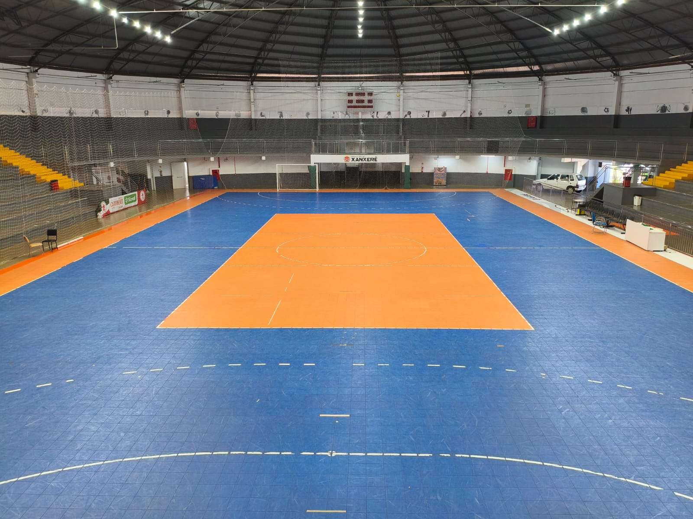

A Associação Chapecoense de Futsal abriu a venda de ingressos online para a Copa Sul de Futsal. A competição reunirá algumas das principais equipes de Santa Catarina, Paraná e Rio Grande do Sul, no período de 23 a 27 de setembro, na cidade de Xanxerê, a 45 km de Chapecó. O Verdão das Quadras é o anfitrião do torneio e mandará os jogos na Arena Ivo Sguissardi.
Os interessados já podem assegurar espaço nas arquibancadas por meio do site ingressojogo.com.br. Há a opção do "passaporte", que custa R$ 100 e dá acesso a todas as 15 partidas do campeonato. Na primeira fase, serão quatro jogos por rodada (quarta, quinta e sexta), dois na semifinal (sábado) e um na final (domingo).

Já o bilhete por rodada terá o valor de R$ 30, sendo R$ 15 a meia-entrada para as pessoas com direito garantido por lei. Crianças até 12 anos não pagam, desde que acompanhadas por um responsável e mediante apresentação de documento de identificação na portaria. Em breve, a Chape Futsal divulgará informações sobre a venda de ingressos físicos.
A Copa Sul reúne oito clubes. No grupo 1 estão Jaraguá (SC), Criciúma (SC), Guarapuava (PR) e Passo Fundo (RS), enquanto o 2 é composto por Chapecoense (SC), Caçador (SC), Campo Mourão (PR) e Guaporé (RS). Os dois primeiros de cada chave se classificam para a semifinal, etapa que definirá os finalistas.
O certame premia o campeão com vaga à Copa dos Campeões. Esta disputa nacional será formada pelos vencedores das copas regionais e classifica o ganhador para a Supercopa do Brasil 2027, que define o representante do País na Taça Libertadores da América.
Tabela de Jogos
Crédito das fotos: Divulgação